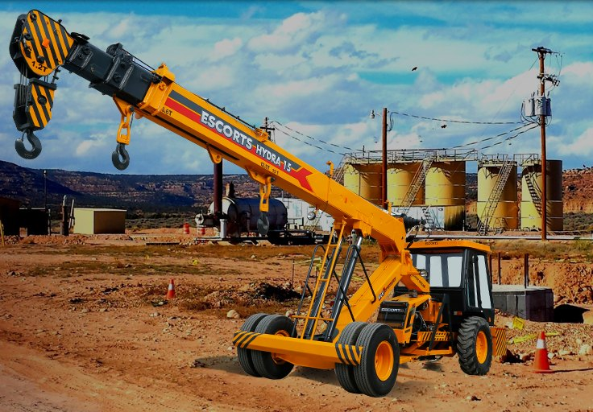

LIFTING & LOGISTICS01 / LIFT
Crane Services
Crane hire, lifting support and equipment solutions planned around site conditions, timelines and safety requirements.
Request crane support →WHAT WE DO
From crane and JCB services to civil works and smart infrastructure, LiftX Infra brings services together to help projects move safely and confidently.

LIFTING & LOGISTICSCrane hire, lifting support and equipment solutions planned around site conditions, timelines and safety requirements.
Request crane support → EARTHMOVING & SITE WORKS
EARTHMOVING & SITE WORKSJCB hire for excavation, site preparation, trenching and material handling, scheduled around your project needs.
Request JCB support → CIVIL & INFRASTRUCTURE
CIVIL & INFRASTRUCTUREConstruction and civil works with a focus on quality, coordination, efficient execution and dependable delivery.
Discuss your project → PROPERTY & DEVELOPMENT
PROPERTY & DEVELOPMENTDevelopment and project support designed to create lasting value, practical spaces and stronger communities.
Explore opportunities → SMARTER OPERATIONS
SMARTER OPERATIONSExplore data-led monitoring, workflow automation and digital tools that can improve visibility and site efficiency.
Explore smart solutions →CONNECTED EQUIPMENT. SMARTER BUSINESS.
Connect your equipment, strengthen your IT foundation and turn operational data into practical insights. Explore our eight technology specialties alongside dedicated Crane IoT integration services.
Industrial IoT, device integration, sensor and data analytics, real-time monitoring, edge computing, and IoT platforms and dashboards.
Explore IoT servicesIT support and helpdesk, network management, disaster recovery, managed cloud, endpoint management and IT infrastructure.
Explore managed ITManaged security, authorized penetration testing, vulnerability assessment, firewall and network security, SOC monitoring, compliance and risk management.
Explore cybersecurityCloud migration, AWS / Azure / GCP, DevOps and CI/CD, Docker and Kubernetes, data centers, hybrid and multi-cloud infrastructure.
Explore cloud servicesWeb and mobile applications, AI and machine learning, SaaS development, APIs and user-focused UI/UX design.
Explore software servicesIndustrial automation, SCADA and control systems, predictive maintenance, digital twins, robotics integration and smart manufacturing.
Explore industrial automationBig data, business intelligence, data visualization, AI/ML solutions, data lakes and warehousing, and analytics for operations.
Explore data services5G and private networks, industrial networking, wireless solutions, SD-WAN, LTE / LoRa / NB-IoT connectivity, and network design and optimization.
Explore connectivityFROM THE CRANE TO THE DASHBOARD
Plan connected fleet monitoring for ACE Hydra, Escorts Kubota / Farana and TIL / Manitowoc cranes using OEM-approved passive CAN/J1939 connections, suitable sensors and industrial LTE/GNSS gateways. Signal availability and sensor requirements must be assessed for each machine.
Bring engine, hydraulic, load and fuel telemetry into fleet dashboards with gateway diagnostics and alerts. Integration planning covers secure data transmission, dashboard connections, commissioning and ongoing device health monitoring without replacing crane safety systems.
Demo, not live telemetry: Our 12-crane dashboard uses simulated readings only. No real gateway is connected. Live monitoring requires hardware installation, verified signals and a deployed backend.